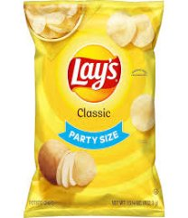
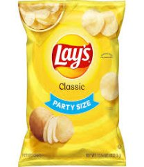
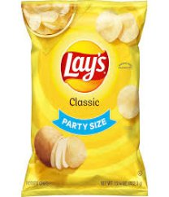

Fresh Grocery
Everyday
Get your healthy groceries at your doorsteps within
the comfort
of your home

Some of our products
 


Get your healthy groceries at your doorsteps within
the comfort
of your home
